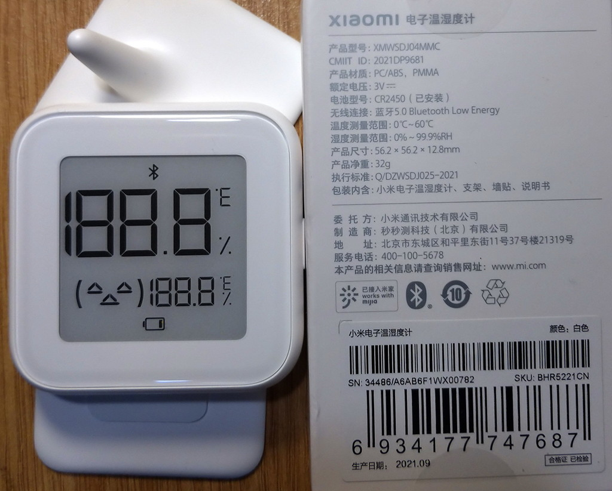
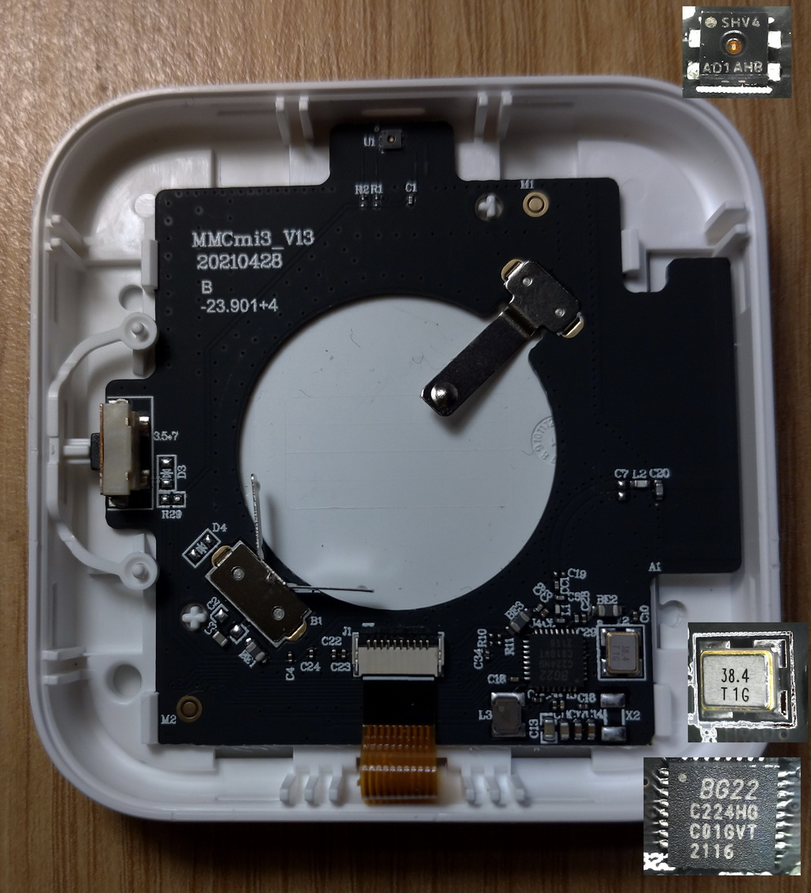
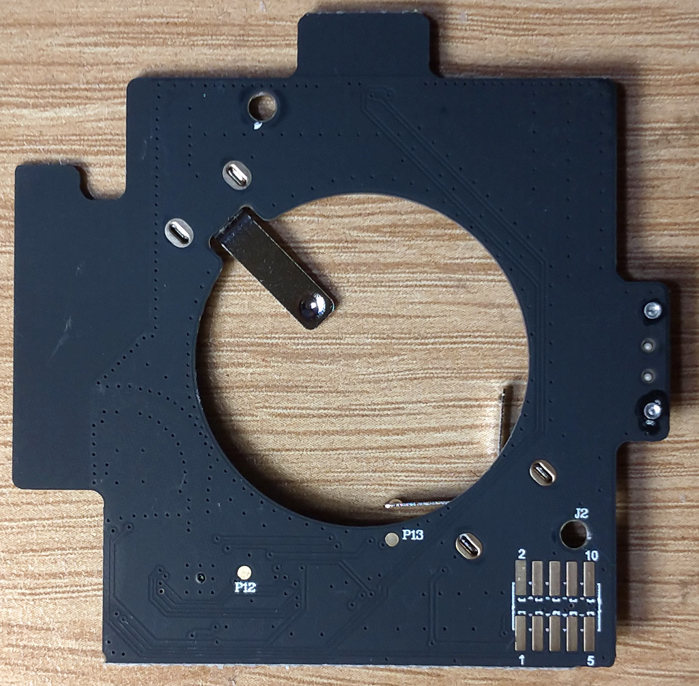
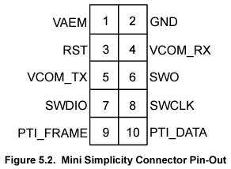
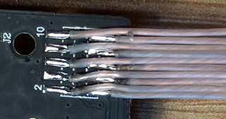
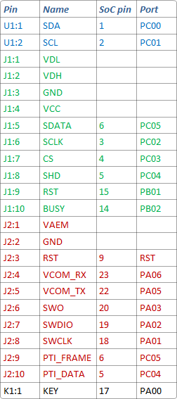
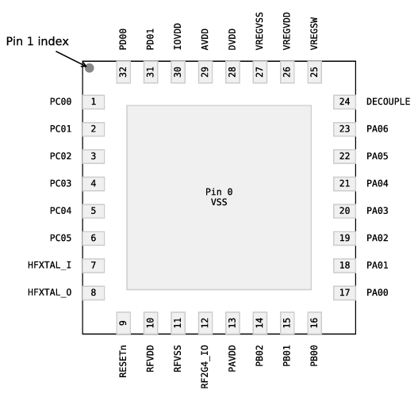
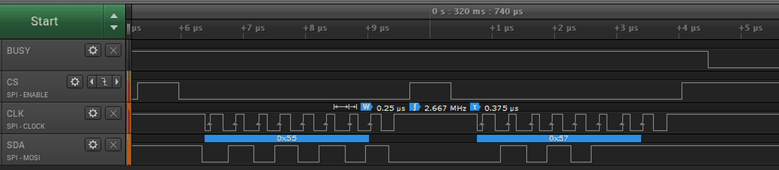

XMWSDJO4MMC

XMWSDJ04MMC_GraphMemo.html
XMWSDJ04MMC_Utils.html
SoC: Silicon Labs EFR32BG22C224HG



 
 
Power Consumption Original Firmware
UUID-s
Debug SWO-RTT.log
Original FullFlash.bin

Saleae Logic E-Ink (J1) Captures:
Start, Show, Redraw
SPI Log:
Start, Show, Redraw